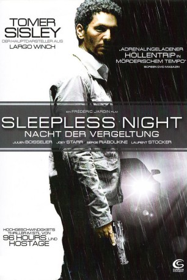

#2268 Sleepless Night - Nacht der Vergeltung
Alternativ: Sleepless Night (Englischer Titel)
 
 IMDB-Wertung: 6.7 / 10
IMDB-Wertung: 6.7 / 10  Metascore: 75
Metascore: 75 
Vincent ist ein Cop mit einem gefährlichen Doppelleben. Als Vincent eine große Menge Kokain von einigen Drogendealern stiehlt, rächen sich diese, indem sie seinen Sohn kidnappen und mit seiner Ermordung drohen - sollte der Stoff nicht binnen kürzester Zeit wieder auftauchen. Auf dem Weg zur Übergabe in einem großen Nachtclub, gerät Vincent jedoch in einen Strudel aus Täuschung, Verrat und Betrug. Er muss sich seinen Weg durch überfüllte Tanzflächen und dunkle Korridore im labyrinthartigen Nachtclub kämpfen, um sein Kind zu retten.
Jahr: 2011
Dauer: 103 Minuten
FSK: 16
Land: Frankreich Studio: Sunfilm EntertainmentTonspuren:
Untertitel:
Auflösung: 1080p (1920x1040) Größe: 4915 MB
Genre: Action, Krimi, Thriller
Regisseur: Frédéric Jardin
Drehbuch: Frédéric Jardin, Nicolas Saada, Frédéric Jardin, Olivier Douyère
Soundtrack: Nicolas Errèra
Darsteller:
 Tomer Sisley als Vincent
Tomer Sisley als Vincent Julien Boisselier als Lacombe
Julien Boisselier als Lacombe Joey Starr als Feydek
Joey Starr als Feydek Birol Ünel als Yilmaz
Birol Ünel als Yilmaz Lizzie Brocheré als Vignali
Lizzie Brocheré als Vignali- Catalina Denis als Julia
 Pom Klementieff als Lucy
Pom Klementieff als Lucy- Dean Constantin als Policier
 Laurent Demianoff als Passager voiture came
Laurent Demianoff als Passager voiture came- Serge Riaboukine als José Marciano
 Laurent Stocker als Manuel
Laurent Stocker als Manuel- Samy Seghir als Thomas
- Dominique Bettenfeld als Alex
 Adel Bencherif als Abel
Adel Bencherif als Abel- Vincent Bersoulle als Turc 3
- Olivier Massart als Quinquagénaire
- Cécile Boland als Barmaid
- Pascal Lavanchy als Conducteur
- Hervé Sogne als Jeune flic police secours
- Gabriel Boisante als Inspecteur
- Anne-Elisabeth Chuffart als Jeune inspecteur
- Albert Dray als Témoin
- Jean-Michel Correia als Videur
- Jérôme Gaspard als Trentenaire
- Issam Akel als Barman 1
- Thomas Ancora als Barman 2
- Shom Siddiqi als Sri-lankais 1
- Laurent Hérion als Cuisinier
- Pascal Guégan als Joueur billard
- Kevin Conseil als Serveur
- Natasha Bintz als Employée vestiaire 1
- Esther Correira als Employée vestiaire 2
- Nikola Kostic als Conducteur voiture came
- Sacha Cortez als DJ
- Bénédicte Philippon als Jeune fille défoncée
- Noha Choukrallah als Chanteuse 1
- François Saussus als Chanteur / Sbire 1
- Manon als Chanteuse 2
- Emman Van Landeghem als Chanteur
- Fabrice Giacinto als Sbire 2
- Claude Breda als (uncredited
Datei: X:\2011(N-Z)\Sleepless Night - Nacht der Vergeltung (2011, FSK16, 1920x1040).mkv seit 25.10.2015
Festplatte: HD 2011(G-Z)
 Es gibt insgesamt 132 Filme in der Gruppe '2011(N-Z)'
Es gibt insgesamt 132 Filme in der Gruppe '2011(N-Z)'